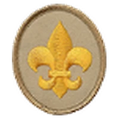
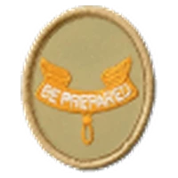
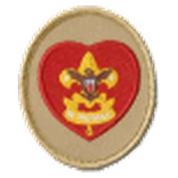
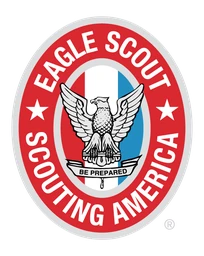

YOUR NEXT CHAPTER
Your trail to Eagle
Seven ranks. A lifetime of possibility.
Your story starts with a first meeting. Learn outdoor skills, make friends, take on responsibility, and discover the leader you can become. One adventure at a time, your own trail begins to take shape.
-

Start here
Scout
Learn the Scout Oath and Law, meet your patrol, and practice the basics that set you up for adventures ahead.
-
Build confidence
Tenderfoot
Get hands-on with camping, first aid, teamwork, and personal fitness. Small challenges build confidence.
-

Find your footing
Second Class
Practice navigation, outdoor cooking, water safety, and service as you become more capable on the trail.
-
Be ready for adventure
First Class
Bring your outdoor skills together and grow into a Scout your patrol can count on.
-
Step into leadership
Star
Explore interests through merit badges, serve your community, and take on a position of responsibility.
-

Lead with purpose
Life
Keep building your leadership and merit badge skills while preparing for the final steps toward Eagle.
-

Make your mark
Eagle
Plan and lead an approved service project, complete the remaining rank requirements, and share your journey at an Eagle board of review.
IT STARTS WITH YOU
No one hikes this trail alone.
Your patrol, youth leaders, adult leaders, and merit badge counselors help you along the way. Advancement is not a race: learn by doing, enjoy the adventures, and build your skills one step at a time.
This trail is an overview, not a complete requirements checklist. Follow the current official requirements and work with troop leaders as you plan your next steps.